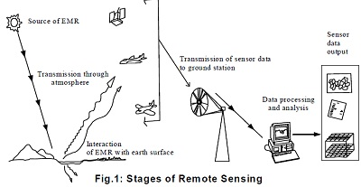
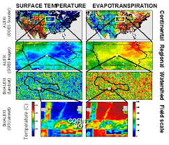
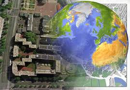

Une introduction
Maintenant-a-jours le domaine de la télédétection et des SIG est devenue excitante et glamour avec des opportunités en expansion rapide. De nombreuses organisations dépensent de grandes quantités d'argent sur ces domaines. Ici se pose la question pourquoi ces domaines sont si importants au cours des dernières années. Deux raisons principales sont là derrière tout cela. Cliquez sur chaque objet pour en savoir plus. introduction Vue d'ensemble Histoire application
Cet article contient les informations pertinentes sur la télédétection. Ces panneaux pliables sont conçus et programmés par Anmol & Anmol introduction Vue d'ensemble Histoire application
1) De nos jours les scientifiques, les chercheurs, les étudiants et même les gens ordinaires se montrent un grand intérêt pour une meilleure compréhension de notre environnement. Par environnement, nous entendons l'espace géographique de leur zone d'étude et les événements qui s'y déroulent. En d'autres termes, nous avons pris conscience que l'espace géographique avec les données décrivant, fait partie de notre monde quotidien; presque toutes les décisions que nous prenons est influencé ou dictée par un fait de la géographie.
2) la promotion de la technologie spatiale sophistiquée (qui peut fournir grand volume de données spatiales), avec la baisse des coûts de matériel et de logiciels (qui peut traiter ces données) ordinateur a fait Télédétection et SIG abordable pour non seulement situation complexe de l'environnement / spatiale mais aussi abordable à un plus large public.
Par conséquent, il devient la nécessité de l'heure d'être conscient de SIG et RS afin d'aider la terre et de la société pour un avenir durable.
Pour plus d'informations à propos de SIG et RS, cliquez sur le panneau réductible contenant les informations pertinentes.
télédétection
Littéralement télédétection signifie obtenir des informations sur un objet, la zone ou phénomène sans entrer en contact direct avec lui. Si nous passons par ce sens de la télédétection, puis un certain nombre de choses viendrait sous capteur à distance, par exemple, Sismographes, fathomètre etc. Sans entrer en contact direct avec l'objet de tremblement de terre, sismographe peuvent mesurer l'intensité du tremblement de terre. De même, sans entrer en contact avec le fond de l'océan, sondeur peut mesurer sa profondeur. Cependant, télédétection moderne signifie acquérir des informations sur les surfaces terrestres et aquatiques de la terre en utilisant l'énergie électromagnétique réfléchie ou émise. 
La télédétection permet de recueillir des données de zones dangereuses ou inaccessibles. Applications de la télédétection comprennent la déforestation de surveillance dans des domaines tels que theAmazon bassin, caractéristiques glaciaires en Arctique et l'Antarctique, et la profondeur de sondage des profondeurs océaniques et côtières. Collection militaire pendant la guerre froide a fait usage de la collecte de stand-off de données sur les zones frontalières dangereuses. La télédétection remplace également la collecte de données coûteuse et lente sur le terrain, assurant dans le processus que les zones ou objets ne sont pas perturbés.
Plates-formes orbitales recueillent et transmettent des données provenant de différentes parties du spectre électromagnétique, qui, en conjonction avec la détection et l'analyse aérien ou au sol plus grande échelle, offre aux chercheurs suffisamment d'informations pour surveiller les tendances telles que El Nino et d'autres phénomènes naturels de court et long terme. D'autres utilisations incluent les différents domaines des sciences de la terre tels que la gestion des ressources naturelles, champs agricoles, tels que l'utilisation des terres et de la conservation, et la sécurité nationale et les frais généraux, de la collecte au sol et stand-off sur les zones frontalières.
La discipline moderne de télédétection a surgi avec le développement de vol. L'aérostier G. Tournachon (alias Nadar) fait des photographies de Paris à partir de son ballon en 1858. pigeons Messenger, cerfs-volants, des fusées et ballons sans équipage ont également été utilisés pour les premières images. À l'exception des ballons, ces premières images individuelles, ne sont pas particulièrement utiles pour la carte de décisions ou à des fins scientifiques.
Photographie aérienne systématique a été développé à des fins militaires de surveillance et de reconnaissance à partir de la Première Guerre mondiale et atteignant un point culminant lors de la guerre froide avec l'utilisation d'avions de combat modifiés tels que le P-51, P-38, RB-66 et le F-4C ou spécifiquement conçu plates-formes de collecte tel que le U2 / TR-1, SR-71, A-5 et la série OV-1 à la fois au-dessus et en recouvrement stand-off. Un développement plus récent est celui de plus en plus petits modules capteur tels que ceux utilisés par la police et l'armée, dans les deux plates-formes habités et non habités. L'avantage de cette approche est que cela nécessite une modification minimale à une cellule donnée. Plus tard, les technologies d'imagerie incluraient Infra-rouge, classique, Doppler et radar à ouverture synthétique.
Le développement des satellites artificiels dans la seconde moitié du 20e siècle a permis la télédétection de progresser à l'échelle mondiale à la fin de la guerre froide. Instrumentation bord différents observation de la Terre et satellites météorologiques tels que Landsat, le Nimbus et de missions plus récentes comme RADARSAT et UARS ont fourni des mesures globales de diverses données pour civile, la recherche, et à des fins militaires. Sondes spatiales vers d'autres planètes ont également fourni l'occasion de mener des études de télédétection dans des environnements extraterrestres, radar à ouverture synthétique à bord de la sonde Magellan a fourni des cartes topographiques détaillées de Vénus, tandis que les instruments à bord des études SOHOallowed à effectuer sur le Soleil et le vent solaire, juste pour ne citer que quelques exemples.
Les développements récents comprennent, en commençant dans les années 1960 et 1970 avec le développement de la transformation de l'image de l'imagerie satellitaire. Plusieurs groupes de recherche dans la Silicon Valley, y compris NASA Ames Research Center, GTE, et ESL Inc. a développé transformée de Fourier techniques menant à la première amélioration notable de données d'imagerie. En 1999, le premier satellite commercial (IKONOS) collecte des images à très haute résolution a été lancé.

Les applications de la télédétection: -
Ce sont les applications de base de la RS ..

Cet article contient les informations pertinentes sur la télédétection. Ces panneaux pliables sont conçus et programmés par Anmol & Anmol
Système d'information géographique
Cliquez sur chaque objet pour en savoir plus.
L'expansion des SIG est système d'information géographique qui se compose de trois mots, à savoir. Géographique, système d'information et. Ici, le mot géographiquetraite des objets ou des caractéristiques spatiales qui peuvent être référencés ou liés à un emplacement spécifique sur la surface de la terre. L'objet peut être physique / naturel ou peut être culturelle / homme fait. De même le motInformation traite de la grande quantité de données sur un objet particulier sur la surface de la terre. Les données comprennent un ensemble des aspects qualitatifs et quantitatifs qui oppose le monde réel acquérir. Le terme Système est utilisé pour représenter approche systémique où l'environnement complexe (se compose d'un grand nombre, des objets / caractéristiques sur la surface de la terre et leurs caractéristiques complexes) se décompose en leurs éléments pour la compréhension facile et de manutention, mais est considéré pour former un ensemble intégré de gestion et de prise de décision. Maintenant-a-jours cela est possible dans un très court laps de temps avec le développement de matériel informatique et des logiciels sophistiqués. Par conséquent, le SIG est un système d'information basé sur ordinateur qui attache une grande variété de qualités et des caractéristiques de l'emplacement géographique et contribue à la planification et la prise de décision.
Centre de formation international (CCI), la Hollande défini Système d'Information Géographique (SIG) comme un système informatisé qui facilite les phases de saisie de données, l'analyse des données et la présentation de données en particulier dans les cas où nous traitons avec des données géoréférencées.
Société indienne de géomatique (ISG) & Centre spatial indien Application (ISRO) SIG défini comme un système qui fournit un mécanisme informatisé d'intégration des divers ensembles de données géo-information et de les analyser afin de générer des informations pertinentes aux besoins de planification dans un contexte.
Selon le Centre pour la gestion et Solutions (SCEM) base de données spatiale, SIG est un outil informatique pour cartographier et analyser les choses qui existent et événements qui se produisent d'une terre.
Burrough (1986) SIG défini comme un ensemble d'outils pour la collecte, le stockage, la récupération à volonté, transformer et afficher des données spatiales du monde réel pour un ensemble particulier de but.
Arnoff (1989) SIG défini comme un système basé sur ordinateur qui fournit quatre ensembles de capacités pour gérer géo données référencées, à savoir. entrée de données, de gestion de données (mémoire de données et la récupération), l'analyse de manipulation et de sortie de données.
De les définitions ci-dessus, nous pouvons conclure que l'utilisateur SIG attend l'appui du système de saisir les données géoréférencées pour l'analyser de différentes façons et pour produire sortie (cartes et d'autres) à partir des données. SIG se fonde sur les concepts et les idées de nombreuses disciplines différentes, telles que la cartographie, la science congitive, informatique, ingénierie, sciences de l'environnement, de la géodésie, l'architecture de paysage, le droit, la photogrammétrie, la politique publique, la télédétection, les statistiques et l'arpentage. Ainsi, il implique non seulement l'étude des questions fondamentales découlant de la création, la manipulation, le stockage et l'utilisation de l'information géographique, mais il examine également les impacts de SIG sur les individus et la société et les influences de la société sur les SIG.

1) Garder longue tradition de fabrication de la carte comme fond, SIG a été développé au cours milieu du 20e siècle avec le développement de la science informatique. L'analyse des données d'emplacements géographiques a été fait par les ordinateurs dans les organismes gouvernementaux et les universités aux Etats-Unis au cours des années 1950 et 1960.
Le premier vrai G.I.S. opérationnelle a été développé par le Dr Roger Tomlinson, ministère des Forêts et du Développement rural, Canada. Il a été appelé comme Système d'information géographique du Canada (CGIS) et a été utilisé pour stocker et manipuler les données à analyser liés à la terre. Dr Roger Tomlison a également connu sous le nomPère de G.I.S.En 1964, un laboratoire d'informatique graphique et analyse spatiale a été établi à la Harvard Graduate School of Design par Howard T. Fisher. Cette organisation a développé un certain nombre de concepts théoriques importants de la manipulation de données spatiales et dans les années 1970 il a distribué code logiciel séminal et le système tels queSYMAP, GRID and ODYSSEY. Ceci a inspiré le développement commercial ultérieur.
2) En début des années 1980, M & S Computing (plus tard Intergraph) et Environmental Systems Research Institute (ESRI) a émergé comme fournisseurs commerciaux de SIG logiciel. ESRI a publié ARC / Info et ARC Voir logiciel en 1981 et 1992 respectivement.
À la fin du 20e siècle, le développement de l'ARC Voir activé visualisation SIG données via Internet et a éliminé la plupart des dépenses de matériel et de licences de logiciels. Depuis lors, un certain nombre d'organisations et d'universités ont fait des recherches dans le domaine des SIG et le développement de logiciels utilisateur amicales. Maintenant, il ya un nombre croissant de libre, open source SIG paquets qui vont dans une large gamme de systèmes d'exploitation et accomplissent des tâches spécifiques. 
Après avoir connaissances relatives au système informatique et ayant différents types de données (spatiales et d'attribut), voyons comment des fonctions SIG. Fonction des SIG est expliqué dans les étapes suivantes:
saisie de données
Les deux données spatiales et d'attribut sont entrés dans le système informatique par les différents périphériques d'entrée comme scanner, numériseur, conseil principal, souris, etc. Scanner, numériseur, la souris sont utilisés pour entrer des données spatiales. Les données des attributs disponibles sous forme de rapports, tableaux, etc., sont entrés par clavier. Comme les données sont tirées de différentes sources, ils ont différentes échelles, des projections, référencement système, etc. Par conséquent, il est nécessaire de normaliser la base de données à la norme commune. Logiciel de SIG permet cette opération par géo référencement or feuille de caoutchoucProcédé. Cela signifie étirage de cartes dans des directions différentes de manière à correspondre avec des coordonnées connues.
Stockage des données
Les différentes entités spatiales qui représentent différentes caractéristiques de monde réel peuvent être stockées dans deux formats différents dans l'ordinateur: en format raster et dans un format vectoriel. La connaissance de ces formats dans lesquels les données spatiales sont stockées, est nécessaire pour les décideurs car elle affecte l'exactitude des données, leur analyse, la capacité de stockage de l'ordinateur, etc.
En format raster, la zone d'étude est divisée en grille régulière ou cellules carrées organisées en lignes et en colonnes. Les cellules individuelles sont utilisés pour stocker des entités points, lignes et surfaces. Les données de points sont stockées dans des cellules individuelles. Les données de ligne sont stockés en reliant des cellules en lignes. Les unités de surface sont stockés en regroupant les cellules en polygones. La taille de la cellule de grille est très important car il influence la précision des caractéristiques spatiales.

Cet article contient les informations pertinentes sur la télédétection. Ces panneaux pliables sont conçus et programmés par Anmol & Anmol
Ce fut un bref résumé de Système d'Information Géographique (SIG). Pour plus d'informations du SIG et RS présentant de l'intérêt pour les eaux souterraines cliquez sur le bouton ci-dessous.

Anman Infotech. | Conçu par Anmol & Anmol | L'Ecole Internationale aryenne Varanasi | Créé dans le site de Adobe Dreamweaver Creative Cloud Conçu en HTML5 | Contexte créé dans Picasa par Google | Droits contenu appartiennent à leurs propriétaires respectifs.